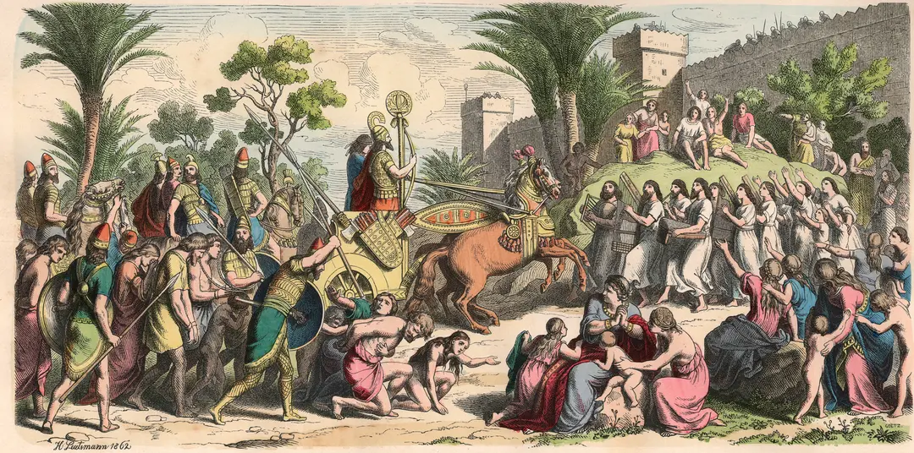
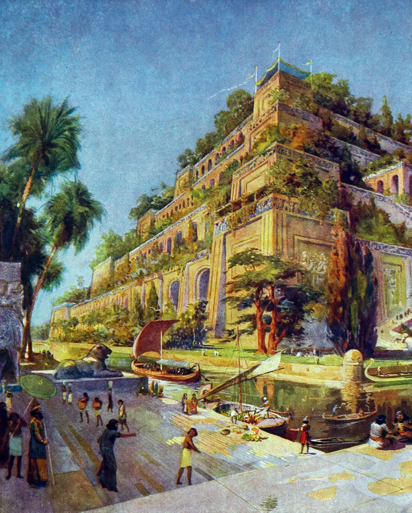
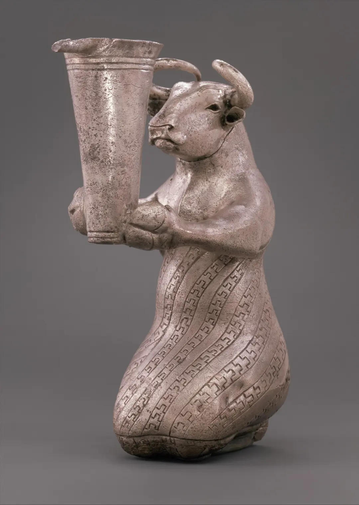

Mesopotamia
Mesopotamia is a region of southwest Asia in the Tigris and Euphrates river system that benefitted from the area’s climate and geography to host the beginnings of human civilization. Its history is marked by many important inventions that changed the world, including the concept of time, math, the wheel, sailboats, maps and writing. Mesopotamia is also defined by a changing succession of ruling bodies from different areas and cities that seized control over a period of thousands of years.
Where is Mesopotamia?
Mesopotamia is located in the region now known as the Middle East, which includes parts of southwest Asia and lands around the eastern Mediterranean Sea. It is part of the Fertile Crescent, an area also known as “Cradle of Civilization” for the number of innovations that arose from the early societies in this region, which are among some of the earliest known human civilizations on earth.
The word “mesopotamia” is formed from the ancient words “meso,” meaning between or in the middle of, and “potamos,” meaning river. Situated in the fertile valleys between the Tigris and Euphrates rivers, the region is now home to modern-day Iraq, Kuwait, Turkey and Syria.

Mesopotamian Civilization
Humans first settled in Mesopotamia in the Paleolithic era. By 14,000 B.C., people in the region lived in small settlements with circular houses.
Five thousand years later, these houses formed farming communities following the domestication of animals and the development of agriculture, most notably irrigation techniques that took advantage of the proximity of the Tigris and Euphrates rivers.
Agricultural progress was the work of the dominant Ubaid culture, which had absorbed the Halaf culture before it.
Ancient Mesopotamia
These scattered agrarian communities started in the northern part of the ancient Mesopotamian region and spread south, continuing to grow for several thousand years until forming what modern humans would recognize as cities, which were considered the work of the sumer people.
Uruk was the first of these cities, dating back to around 3200 B.C. It was a mud brick metropolis built on the riches brought from trade and conquest and featured public art, gigantic columns and temples. At its peak, it had a population of some 50,000 citizens.
Sumerians are also responsible for the earliest form of written language, cuneiform, with which they kept detailed clerical records.
By 3000 B.C., Mesopotamia was firmly under the control of the Sumerian people. Sumer contained several decentralized city-states—Eridu, Nippur, Lagash, Uruk, Kish and Ur.
The first king of a united Sumer is recorded as Etana of Kish. It’s unknown whether Etana really existed, as he and many of the rulers listed in the Sumerian King List that was developed around 2100 B.C. are all featured in Sumerian mythology as well.
Etana was followed by Meskiaggasher, the king of the city-state Uruk. A warrior named Lugalbanda took control around 2750 B.C.
Gilgamesh
Gilgamesh, the legendary subject of the Epic of Gilgamesh, is said to be Lugalbanda’s son. Gilgamesh is believed to have been born in Uruk around 2700 B.C.
The Epic of Gilgamesh is considered to be the earliest great work of literature and the inspiration for some of the stories in the Bible. In the epic poem, Gilgamesh goes on an adventure with a friend to the Cedar Forest, the land of the Gods in Mesopotamian mythology. When his friend is slain, Gilgamesh goes on a quest to discover the secret of eternal life, finding: "Life, which you look for, you will never find. For when the gods created man, they let death be his share, and life withheld in their own hands."
King Lugalzagesi was the final king of Sumer, falling to Sargon of Akkad, a Semitic people, in 2334 B.C. They were briefly allies, conquering the city of Kish together, but Lugalzagesi’s mercenary Akkadian army was ultimately loyal to Sargon.
Sargon and the Akkadians
The Akkadian Empire existed from 2234-2154 B.C. under the leadership of the now-titled Sargon the Great. It was considered the world’s first multicultural empire with a central government.
Little is known of Sargon’s background, but legends give him a similar origin to the Biblical story of Moses. He was at one point an officer who worked for the king of Kish, and Akkadia was a city that Sargon himself established. When the city of Uruk invaded Kish, Sargon took Kish from Uruk and was encouraged to continue with conquest.
Sargon expanded his empire through military means, conquering all of Sumer and moving into what is now Syria. Under Sargon, trade beyond Mesopotamian borders grew, and architecture became more sophisticated, notably the appearance of ziggurats, flat-topped buildings with a pyramid shape and steps.
Gutians
The final king of the Akkadian Empire, Shar-kali-sharri, died in 2193 B.C., and Mesopotamia went through a century of unrest, with different groups struggling for control.
Among these groups were the Gutian people, barbarians from the Zagros Mountains. The Gutian rule is considered a disorderly one that caused a severe downturn in the empire’s prospects.
Ur-Namma
In 2100 B.C. the city of Ur attempted to establish a dynasty for a new empire. The ruler of Ur-Namma, the king of the city of Ur, brought Sumerians back into control after Utu-hengal, the leader of the city of Uruk, defeated the Gutians.
Under Ur-Namma, the first code of law in recorded history, The Code of Ur-Nammu, appeared. Ur-Namma was attacked by both the Elamites and the Amorites and defeated in 2004 B.C.
The Babylonians
Choosing Babylon as the capital, the Amorites took control and established Babylonia.
Kings were considered deities and the most famous of these was Hammurabi, who ruled 1792–1750 B.C. Hammurabi worked to expand the empire, and the Babylonians were almost continually at war.
Hammurabi’s most famous contribution is his list of laws, better known as the Code of Hammurabi, devised around 1772 B.C.
Hammurabi’s innovation was not just writing down the laws for everyone to see, but making sure that everyone throughout the empire followed the same legal codes, and that governors in different areas did not enact their own. The list of laws also featured recommended punishments to ensure that every citizen had the right to the same justice.
In 1750 B.C. the Elamites conquered the city of Ur. Together with the control of the Amorites, this conquest marked the end of Sumerian culture.
The Hittites
The Hittites, who were centered around Anatolia and Syria, conquered the Babylonians around 1595 B.C.
Smelting was a significant contribution of the Hittites, allowing for more sophisticated weaponry that lead them to expand the empire even further. Their attempts to keep the technology to themselves eventually failed, and other empires became a match for them.
The Hittites pulled out shortly after sacking Babylon, and the Kassites took control of the city. Hailing from the mountains east of Mesopotamia, their period of rule saw immigrants from India and Europe arriving, and travel sped up thanks to the use of horses with chariots and carts.
The Kassites abandoned their own culture after a couple of generations of dominance, allowing themselves to be absorbed into Babylonian civilization.
The Assyrians

RECEPTION OF A VICTORIOUS GENERAL OF THE ASSYRIAN EMPIRE IN MESOPOTAMIA.
The Assyrian Empire under the leadership of Ashur-uballit I rose around 1365 B.C. in the areas between the lands controlled by the Hittites and the Kassites.
Around 1220 B.C., King Tukulti-Ninurta I aspired to rule all of Mesopotamia and seized Babylon. The Assyrian Empire continued to expand over the next two centuries, moving into modern-day Palestine and Syria.
Under the rule of Ashurnasirpal II in 884 B.C., the empire created a new capitol, Nimrud, built from the spoils of conquest and brutality that made Ashurnasirpal II a hated figure.
His son Shalmaneser spent the majority of his reign fighting off an alliance between Syria, Babylon and Egypt, and conquering Israel. One of his sons rebelled against him, and Shalmaneser sent another son, Shamshi-Adad, to fight for him. Three years later, Shamshi-Adad ruled.
Sargon II
A new dynasty began in 722 B.C. when Sargon II seized power. Modeling himself on Sargon the Great, he divided the empire into provinces and kept the peace.
His undoing came when the Chaldeans attempted to invade and Sargon II sought an alliance with them. The Chaldeans made a separate alliance with the Elamites, and together they took Babylonia.
Sargon II lost to the Chaldeans but switched to attacking Syria and parts of Egypt and Gaza, embarking on a spree of conquest before eventually dying in battle against the Cimmerians from Russia.
Sargon II’s grandson Esarhaddon ruled from 681 to 669 B.C. and went on a destructive campaign of conquest through Ethiopia, Palestine and Egypt, destroying cities he rampaged through after looting them. Esarhaddon struggled to rule his expanded empire. A paranoid leader, he suspected many in his court of conspiring against him and had them killed.
His son Ashurbanipal is considered to be the final great ruler of the Assyrian empire. Ruling from 669 to 627 B.C., he faced a rebellion in Egypt, losing the territory, and from his brother, the king of Babylonia, whom he defeated. Ashurbanipal is best remembered for creating Mesopotamia’s first library in what is now Nineveh, Iraq. It is the world’s oldest known library, predating the Library of Alexandria by several hundred years.
Nebuchadnezzar
In 626 B.C. the throne was seized by Babylonian public official Nabopolassar, ushering in the rule of the Semitic dynasty from Chaldea. In 616 B.C. Nabopolassar attempted to take Assyria but failed.

THE HANGING GARDENS OF BABYLON.
His son Nebuchadnezzar reigned over the Babylonian Empire following an invasion effort in 614 B.C. by King Cyaxares of Media that pushed the Assyrians further away.
Nebuchadnezzar is known for his ornate architecture, especially the Hanging Gardens of Babylon, the Walls of Babylon and the Ishtar Gate. Under his rule, women and men had equal rights.
Nebuchadnezzar is also responsible for the conquest of Jerusalem, which he destroyed in 586 B.C., taking its inhabitants into captivity. He appears in the Old Testament because of this action.
The Persian Empire
Persian Emperor Cyrus II seized power during the reign of Nabonidus in 539 B.C. Nabonidus was such an unpopular king that Mesopotamians did not rise to defend him during the invasion.
Babylonian culture is considered to have ended under Persian rule, following a slow decline of use in cuneiform and other cultural hallmarks.
By the time Alexander the Great conquered the Persian Empire in 331 B.C., most of the great cities of Mesopotamia no longer existed and the culture had been long overtaken. Eventually, the region was taken by the Romans in A.D. 116 and finally Arabic Muslims in A.D. 651.
Mesopotamian Gods
Mesopotamian religion was polytheistic, with followers worshipping several main gods and thousands of minor gods. The three main gods were Ea (Sumerian: Enki), the god of wisdom and magic, Anu (Sumerian: An), the sky god, and Enlil (Ellil), the god of earth, storms and agriculture and the controller of fates. Ea is the creator and protector of humanity in both the Epic of Gilgamesh and the story of the Great Flood.
In the latter story, Ea made humans out of clay, but the God Enlil sought to destroy humanity by creating a flood. Ea had the humans build an ark and mankind was spared. If this story sounds familiar, it should; foundational Mesopotamian religious stories about the Garden of Eden, the Great Flood, and the Creation of the Tower of Babel found their way into the Bible, and the Mesopotamian religion influenced both Christianity and Islam.
Each Mesopotamian City had its own patron god or goddess, and most of what we know of them has been passed down through clay tablets describing Mesopotamian religious beliefs and practices. A painted terracotta plaque from 1775 B.C. gives an example of the sophistication of Babylonian art, portraying either the goddess Ishtar or her sister Ereshkigal, accompanied by night creatures.
Mesopotamian Art
While making art predates civilization in Mesopotamia, the innovations there include creating art on a larger scale, often in the context of their grandiose and complex architecture, and frequently employing metalwork.

A KNEELING BULL HOLDING A SPOUTED VESSEL, ONE OF THE EARLIEST EXAMPLES OF METALWORK IN ART FROM MESOPOTAMIA.
One of the earliest examples of metalwork in art comes from southern Mesopotamia, a silver statuette of a kneeling bull from 3000 B.C. Before this, painted ceramics and limestone were the most common art forms.
Another metal-based work, a goat standing on its hind legs and leaning on the branches of a tree, featuring gold and copper along with other materials, was found in the Great Death Pit at Ur and dates to 2500 B.C.
Mesopotamian art often depicted its rulers and the glories of their lives. Also created around 2500 B.C. in Ur is the intricate Standard of Ur, a shell and limestone structure that features an early example of complex pictorial narrative, depicting a history of war and peace.
In 2230 B.C., Akkadian King Naram-Sin was the subject of an elaborate work in limestone that depicts a military victory in the Zagros Mountains and presents Naram-Sin as divine.
Among the most dynamic forms of Mesopotamian art are the reliefs of the Assyrian kings in their palaces, notably from Ashurbanipal’s reign around 635 B.C. One famous relief in his palace in Nimrud shows him leading an army into battle, accompanied by the winged god Assur.
Ashurbanipal is also featured in multiple reliefs that portray his frequent lion-hunting activity. An impressive lion image also figures into the Ishtar Gate in 585 B.C., during the reign of Nebuchadnezzar II and fashioned from glazed bricks.
Mesopotamian art returned to the public eye in the 21st century when museums in Iraq were looted during conflicts there. Many pieces went missing, including a 4,300-year-old bronze mask of an Akkadian king, jewelry from Ur, a solid gold Sumerian harp, 80,000 cuneiform tablets and numerous other irreplaceable items.